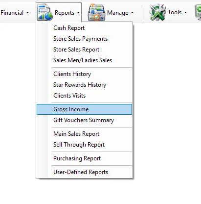
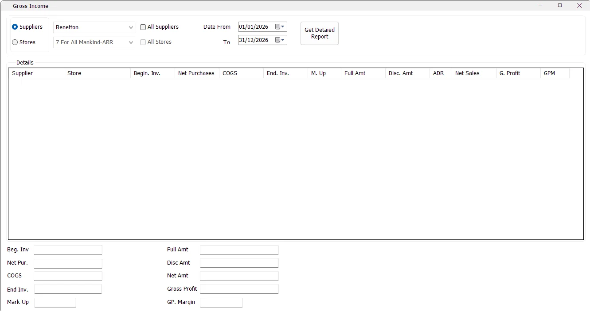
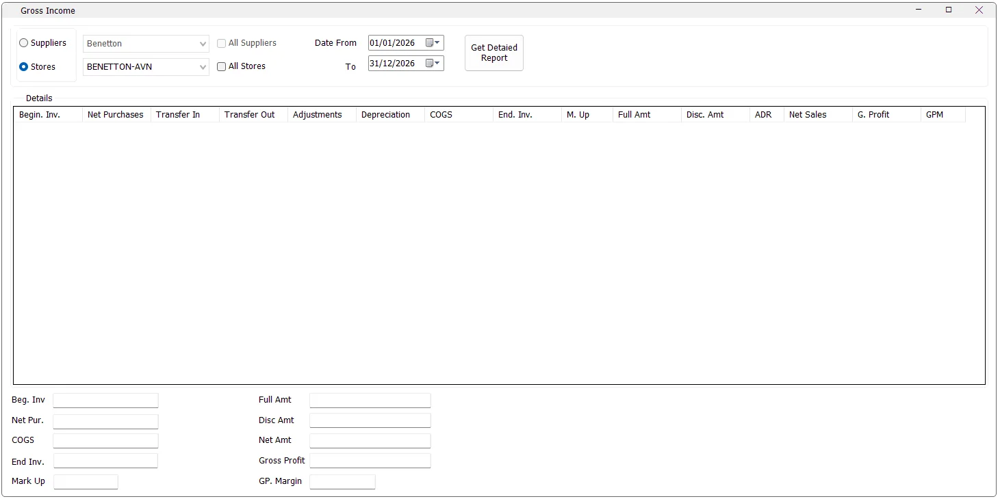

Supplier
Which supplier generates more gross profit?
Select Suppliers → All Suppliers and compare Net Sales, G. Profit and GPM.
Gross Income combines sales, inventory cost and stock movement information to explain gross profit for a selected period. The report can be analyzed by Supplier or by Store, and includes beginning inventory, purchases, COGS, ending inventory, markup, discount rate, net sales, gross profit and gross profit margin.

When Gross Income opens, IMS automatically sets the date range to the full year of the current IMS Working Date: 1 January through 31 December. Change Date From and To when a shorter or different period is required.
The two modes answer different questions and also change which stock-movement columns are available.
| Mode | Use it for | Extra behavior |
|---|---|---|
| Suppliers | Analyze inventory investment, sales cost and profitability by supplier. | Store transfers, stock adjustments and depreciation are not displayed as separate columns. |
| Stores | Analyze inventory movement and profitability by store. | Adds Transfer In, Transfer Out, Adjustments and Depreciation to the report. |

When All Suppliers is selected, IMS disables the individual supplier selector and displays the Supplier column so each supplier can appear as a separate row.

When Store mode is selected, supplier selection is disabled. When All Stores is selected, IMS disables the individual store selector and displays the Store column.
Gross Income includes IMS sales and return transaction codes 51, 52, 53 and 54. The sales source therefore includes both cash and credit activity together with their corresponding returns.
| Column | Meaning in IMS |
|---|---|
| Supplier / Store | The analyzed supplier or store when the corresponding All option is used. |
| Begin. Inv. | Beginning inventory value calculated by IMS from opening inventory and movements before the requested period. |
| Net Purchases | Net purchase cost recorded within the requested period. |
| Transfer In | Inventory cost transferred into a store during the requested period. Store mode only. |
| Transfer Out | Inventory cost transferred out of a store during the requested period. Store mode only. |
| Adjustments | Stock adjustment cost within the period. Store mode only. |
| Depreciation | Depreciation cost within the period. Store mode only. |
| COGS | Cost of Goods Sold: Full Cost + Discounted Cost from the sales activity. |
| End. Inv. | Ending inventory value after the period's purchases, sales cost and applicable stock movements. |
| M. Up | Average Mark Up in this report: Net Sales ÷ COGS. |
| Full Amt | Sales amount from full-price sales lines. |
| Disc. Amt | Sales amount from discounted sales lines. |
| ADR | Average Discount Rate supplied by the IMS daily-sales data for the report grouping. |
| Net Sales | Full Amt + Disc. Amt. |
| G. Profit | Gross Profit = Net Sales − COGS. |
| GPM | Gross Profit Margin = Gross Profit ÷ Net Sales. |
Gross Income reconstructs inventory value from the IMS movement history rather than simply reading one closing balance. The exact calculation differs between Supplier and Store mode.
These are the formulas used by this IMS report. They are worth understanding when reconciling Gross Income against other inventory or finance reports, because Store mode explicitly incorporates internal stock movements and depreciation.
| KPI | Formula used by Gross Income |
|---|---|
| COGS | Full Cost + Discounted Cost |
| Net Sales | Full Amt + Disc. Amt |
| Gross Profit | Net Sales − COGS |
| M. Up | Net Sales ÷ COGS |
| GPM | Gross Profit ÷ Net Sales |
The summary fields total the generated report and show Beg. Inv, Net Pur., COGS, End Inv., Mark Up, Full Amt, Disc Amt, Net Amt, Gross Profit and GP. Margin.
For the complete report, IMS calculates Mark Up and GP Margin again from the overall totals rather than averaging the individual row percentages:
Gross Income gathers several datasets to reconstruct inventory and profitability. Supplier mode loads opening inventory, prior purchases, prior sales cost, period purchases and period sales. Store mode additionally loads transfers, adjustments and depreciation before and within the selected period.
While this work is running, IMS displays a progress indicator and disables the criteria panel. The report runs asynchronously so the UI can update while the datasets are processed.
In Store mode, if the selected store has inventory/movement information but no sales rows for the selected period, IMS can still create a zero-sales row so that the inventory values remain available for analysis.
The Print Simple View button is not available in this screen. Use Get Detailed Report and review the result on screen.
The Gross Income item in the Reports menu is permission controlled. If it is not visible, the user's IMS access policy does not grant permission to view Gross Income.
Select Suppliers → All Suppliers and compare Net Sales, G. Profit and GPM.
Use Store mode and review Begin. Inv., purchases, transfers, adjustments, depreciation, COGS and End. Inv.
Select Stores → All Stores and compare M. Up, G. Profit and GPM.
Use Store mode so purchases, transfers, adjustments, depreciation and COGS are visible separately.
Supplier mode uses the supplier definitions maintained in Manage → Suppliers. Selecting All Suppliers therefore produces one profitability/inventory row for each applicable supplier master.